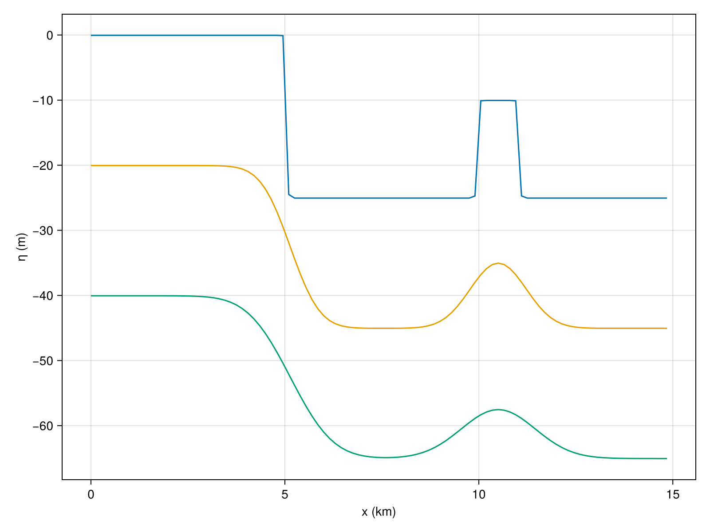

Active Layer Transport
The following is inspired on well-known active layer approaches in river bed sediment transport [3] [4] [1]. All quantities with subscript $f$ are facies dependent. Sediment is measured in meters of deposited material. $P_f$ is the production of sediment per facies in $m/s$. Further unit calculations would be more readable if we consider the unit of sediment as separate, so for instance it doesn't cancel against $m^2$ in the units of sediment flux. In the implementation, $\nu$ has the units of ${\rm m}$ which is totaly weird. TBC
In a model without transport, we could write
\[\sigma + \sum_f {{\partial \eta_f} \over {\partial t}} = \sum_f P_f,\]
where $\sigma$ is the subsidence rate in $m/s$. We consider the mass balance for each facies separately.
We suppose that loose sediment, either fresh production or disintegrated older sediment, is being transported in a layer on top of the sea bed. The flux in this layer is assumed to be directly proportional to the local slope of the sea bed $| \nabla_x \eta_* |$, where $\eta_* = \sum_f \eta_f$, the sum over all facies contributions, including $\eta_0$, the initial bedrock eleveation.

The active layer now contains a concentration $C_f$ particles of different grain size (for each facies $f$). If needed, $C_f = \alpha_f P_f$ where $\alpha_f$ is some facies parameter determining the fraction of production that is available for transport. The sediment flux is given as,
\[{\bf q_f} = -\nu_f C_f {\bf \nabla_x} \eta_*.\]
The following is the mass balance:
\[\sigma + {{\partial \eta_*} \over {\partial t}} = -\sum_f {\bf \nabla_x} \cdot {\bf q_f} + \sum_f P_f,\]
In our modelling we keep track of individual contributions per facies over time [2].
Combining these equations, and ignoring subsidence for the moment (which is a global effect and can't be expressed on a per-facies basis), we get a component-wise diffusion equation
\[{{\partial \eta_f(x)}\over{\partial t}} = {\bf \nabla_x} \cdot \big[ \nu_f \alpha_f\ P_f(x)\ {\bf \nabla_x} \eta_{*}(x) \big] + P_f(x),\]
In our model we need to solve this equation one time-step each iteration. If we solve this using forward methods, we should be reminded of the CFL limit for diffusion equations (depending on the diffusion constants and grid size we shouldn't pick the time steps too large). Alternatively, for these two-dimensional situations, an implicit approach is feasible. Also we should take care that somehow $\nabla(\nu\alpha P \nabla \eta) + P > 0$. The interpretation being that we can't transport more than we produce, even if there is capacity to do so.
To solve this equation, it is nicer to expand the transport-diffusion term using the product rule, in short notation:
\[\partial_t \eta_f = \nu' \nabla P_f(x) \cdot \nabla \eta(x) + \nu' P_f(x) \nabla^2 \eta(x) + P_f(x),\]
where $\nu' = \nu_f \alpha_f$
So we have a advection component with velocity $\nu' \nabla P_f$ and a diffusion component with a coefficient $\nu' P_f$.
As part of the production $P_f$ we disintegrate older sediment at a fixed rate.
Test 1: production transport
Suppose we have an incline in one direction, as per usual on a coastal slice. Production is happening in a circular patch in our box, with constant rate. In addition, we'll release the top 1m of sediment for further transport.
Test model
module ActiveLayer
using Unitful
using CarboKitten.Stencil: convolution, stencil
using CarboKitten.Config: Box, axes
using CarboKitten.BoundaryTrait: Shelf
using CarboKitten.Utility: in_units_of
using CarboKitten.Transport.ActiveLayer: pde_stencil, Amount, Rate
<<example-active-layer>>
endOur input structure facilitates a single facies, specifying an initial bedrock elevation, sediment layer and a function for a location dependent constant production rate. The transport is parametrized by a disintegration rate and a diffusion coefficient.
@kwdef struct Input
box
Δt::typeof(1.0u"Myr")
t_end::typeof(1.0u"Myr")
bedrock_elevation # function (x::u"m", y::u"m") -> u"m"
initial_sediment # function (x::u"m", y::u"m") -> u"m"
production # function (x::u"m", y::u"m") -> u"m/s"
disintegration_rate::typeof(1.0u"m/Myr")
subsidence_rate::typeof(1.0u"m/Myr")
diffusion_coefficient::typeof(1.0u"m")
endProduction patch
Establish a grid of 100x50, 15km on each side, dropping from 0 to 50m depth. Keeping the disintegration rate to a similar value as the production rate seems a sensible choice.
production_patch(center, radius, rate) = function(x, y)
(pcx, pcy) = center
(x - pcx)^2 + (y - pcy)^2 < radius^2 ?
rate :
0.0u"m/Myr"
end
const input = Input(
box=Box{Shelf}(grid_size=(100, 50), phys_scale=150.0u"m"),
Δt=0.001u"Myr",
t_end=1.0u"Myr",
bedrock_elevation = (x, y) -> -x / 300.0,
initial_sediment = (x, y) -> 0.0u"m",
production = production_patch(
(5000.0u"m", 3750.0u"m"),
2.0u"km",
50.0u"m/Myr"),
disintegration_rate = 50.0u"m/Myr",
subsidence_rate = 50.0u"m/Myr",
diffusion_coefficient = 10000.0u"m"
)
Plotting code
#| requires: examples/transport/active-layer.jl
#| creates: docs/src/_fig/active-layer-production-patch.png
#| collect: figures
include("active-layer.jl")
using Unitful
using CarboKitten.Config: axes
using CarboKitten.Utility: in_units_of
using CairoMakie
using .ActiveLayer: input
function main()
(x, y) = axes(input.box)
η = input.bedrock_elevation.(x, y')
p = input.production.(x, y')
fig = Figure()
ax = Axis3(fig[1,1], xlabel="x (km)", ylabel="y (km)", zlabel="η (m)", azimuth=5π/3)
surface!(ax, x |> in_units_of(u"km"), y |> in_units_of(u"km"), η |> in_units_of(u"m"), color = p |> in_units_of(u"m/Myr"))
save("docs/src/_fig/active-layer-production-patch.png", fig)
end
main()Solving the PDE
Just as a reminder:
\[\partial_t \eta_f = \nu' \nabla P_f(x) \cdot \nabla \eta(x) + \nu' P_f(x) \nabla^2 \eta(x) + P_f(x)\]
Below is the kernel encoding a central differencing scheme i.e. [-1, 0, 1]/(2Δx) for first derivative and [0 -1 0; -1 4 -1; 0 -1 0]/Δx^2 for the laplacian.
module ActiveLayer
using Unitful
using ...BoundaryTrait
using ...Boxes: Box
using ...Stencil: stencil
const Rate = typeof(1.0u"m/Myr")
const Amount = typeof(1.0u"m")
function pde_stencil(box::Box{BT}, ν) where {BT <: Boundary{2}}
Δx = box.phys_scale
function kernel(x)
adv = ν * ((x[3, 2][1] - x[1, 2][1]) * (x[3, 2][2] - x[1, 2][2]) +
(x[2, 3][1] - x[2, 1][1]) * (x[2, 3][2] - x[2, 1][2])) /
(2Δx)^2
dif = ν * x[2, 2][2] * (x[3, 2][1] + x[2, 3][1] + x[1, 2][1] +
x[2, 1][1] - 4*x[2, 2][1]) / (Δx)^2
prd = x[2, 2][2]
return max(0.0u"m", adv + dif + prd)
end
stencil(Tuple{Amount, Amount}, Amount, BT, (3, 3), kernel)
end
endModel loop
Every iteration we determine the maximum disintegrated sediment. If the total amount of sediment is smaller than the maximum, then that amount is disintegrated instead. We compute the concentrations in the active layer in terms of amounts of sediment, so $P \Delta t$. Since $P$ appears in every term of the PDE, we're free to do so.
mutable struct State
time::typeof(1.0u"Myr")
sediment::Matrix{typeof(1.0u"m")}
end
function initial_state(input)
x, y = axes(input.box)
State(0.0u"Myr", input.initial_sediment.(x, y'))
end
struct Frame
t::typeof(1.0u"Myr")
δ::Matrix{Amount}
end
function propagator(input)
δ = Matrix{Amount}(undef, input.box.grid_size...)
x, y = axes(input.box)
μ0 = input.bedrock_elevation.(x, y')
function active_layer(state)
max_amount = input.disintegration_rate * input.Δt
amount = min.(max_amount, state.sediment)
state.sediment .-= amount
input.production.(x, y') * input.Δt .+ amount
end
stc = pde_stencil(input.box, input.diffusion_coefficient)
apply_pde(μ::Matrix{Amount}, p::Matrix{Amount}) = stc(tuple.(μ, p), δ)
function (state)
p = active_layer(state)
apply_pde(state.sediment .+ μ0, p)
return Frame(state.time, δ)
end
end
function run_model(input)
state = initial_state(input)
prop = propagator(input)
Channel{State}() do ch
while state.time < input.t_end
Δ = prop(state)
state.sediment .+= Δ.δ
state.time += input.Δt
put!(ch, state)
end
end
endRunning the model
We run the model with 1000 time steps but only inspect one in every 100.

Plotting code
#| requires: examples/transport/active-layer.jl
#| creates: docs/src/_fig/active-layer-test.png
#| collect: figures
module ActiveLayerPlot
include("active-layer.jl")
using CairoMakie
using Unitful
using CarboKitten.Config: axes
using CarboKitten.Utility: in_units_of
using .ActiveLayer: input, run_model
function main()
result = Iterators.map(deepcopy,
Iterators.filter(x -> mod(x[1], 100) == 0, enumerate(run_model(input)))) |> collect
(x, y) = axes(input.box)
η = input.bedrock_elevation.(x, y') .+ result[10][2].sediment .- input.subsidence_rate * result[10][2].time
# p = input.production.(x, y')
fig = Figure(size=(800, 1000))
ax = Axis3(fig[1:2,1], xlabel="x (km)", ylabel="y (km)", zlabel="η (m)", azimuth=5π/3)
surface!(ax, x |> in_units_of(u"km"), y |> in_units_of(u"km"), η |> in_units_of(u"m"))
ax2 = Axis(fig[3,1], xlabel="x (km)", ylabel="η (m)")
for i in 1:10
η = input.bedrock_elevation.(x, y') .+ result[i][2].sediment .- input.subsidence_rate * result[i][2].time
lines!(ax2, x |> in_units_of(u"km"), η[:, 25] |> in_units_of(u"m"))
end
save("docs/src/_fig/active-layer-test.png", fig)
end
end
ActiveLayerPlot.main()Note in the bottom figure, due to sedimentation not keeping up with subsidence, the lines go down in time. We see the sediment transport being favoured to downslope areas, which is what we want. This effect could be made more extreme by increasing the disintegration rate.
Test 2: erosion
Suppose now we have no production, but we start with a steep gradient in the existing sediment. We expect this gradient to erode.
In the input we set the production to zero, but we specify an initial sediment that contains both a step and a top-hat function. Erodability of these kind of features could be a measurable quantity to which we could potentially calibrate this transport model.
Note that, due to the way we populate the active layer, the gradient $\nabla P$ will vanish, leaving us with a pure diffusion system.
function initial_sediment(x, y)
if x < 5.0u"km"
return 30.0u"m"
end
if x > 10.0u"km" && x < 11.0u"km"
return 20.0u"m"
end
return 5.0u"m"
end
const INPUT = ActiveLayer.Input(
box = Box{Shelf}(grid_size=(100, 1), phys_scale=150.0u"m"),
Δt = 0.001u"Myr",
t_end = 1.0u"Myr",
bedrock_elevation = (x, y) -> -30.0u"m",
initial_sediment = initial_sediment,
production = (x, y) -> 0.0u"m/Myr",
disintegration_rate = 50.0u"m/Myr",
subsidence_rate = 50.0u"m/Myr",
diffusion_coefficient = 10000.0u"m")
Plotting code
#| requires: examples/transport/active-layer.jl
#| creates: docs/src/_fig/active-layer-erosion.png
#| collect: figures
module ActiveLayerErosion
include("active-layer.jl")
using Unitful
using CarboKitten.BoundaryTrait: Shelf
using CarboKitten.Config: Box, axes
using CarboKitten.Utility: in_units_of
using CairoMakie
<<example-active-layer-erosion>>
function main(input)
y_idx = 1
result = Iterators.map(deepcopy,
Iterators.filter(x -> mod(x[1]-1, 400) == 0, enumerate(ActiveLayer.run_model(input)))) |> collect
(x, y) = axes(input.box)
# p = input.production.(x, y')
fig = Figure(size=(800, 600))
# ax = Axis3(fig[1:2,1], xlabel="x (km)", ylabel="y (km)", zlabel="η (m)", azimuth=5π/3)
# surface!(ax, x |> in_units_of(u"km"), y |> in_units_of(u"km"), η |> in_units_of(u"m"))
ax2 = Axis(fig[1,1], xlabel="x (km)", ylabel="η (m)")
for r in result
η = input.bedrock_elevation.(x, y') .+ r[2].sediment .- input.subsidence_rate * r[2].time
lines!(ax2, x |> in_units_of(u"km"), η[:, y_idx] |> in_units_of(u"m"))
end
save("docs/src/_fig/active-layer-erosion.png", fig)
end
end
ActiveLayerErosion.main(ActiveLayerErosion.INPUT)Active Layer Component
@compose module ActiveLayer
@mixin WaterDepth, FaciesBase, SedimentBuffer
export disintegration, transportation
using ..Common
using CarboKitten.Transport.ActiveLayer: pde_stencil
using Unitful
@kwdef struct Facies <: AbstractFacies
diffusion_coefficient::typeof(1.0u"m")
end
@kwdef struct Input <: AbstractInput
disintegration_rate::Rate = 50.0u"m/Myr"
end
"""
disintegration(input) -> f!
Prepares the disintegration step. Returns a function `f!(state::State)`. The returned function
modifies the state, popping sediment from the `sediment_buffer` and returns an array of `Amount`.
"""
function disintegration(input)
max_h = input.disintegration_rate * input.time.Δt
output = Array{Float64, 3}(undef, n_facies(input), input.box.grid_size...)
return function(state)
h = min.(max_h, state.sediment_height)
state.sediment_height .-= h
pop_sediment!(state.sediment_buffer, h ./ input.depositional_resolution .|> NoUnits, output)
return output .* input.depositional_resolution
end
end
"""
transportation(input::Input) -> f
Prepares the transportation step. Returns a function `f(state::State, active_layer)`,
transporting the active layer, returning a transported `Amount` of sediment.
"""
function transportation(input)
x, y = axes(input.box)
μ0 = input.bedrock_elevation.(x, y')
# We always return this array
transported_output = Array{Amount, 3}(undef, n_facies(input), input.box.grid_size...)
stencils = [
let stc = pde_stencil(input.box, f.diffusion_coefficient)
(μ, p) -> @views stc(tuple.(μ, p[i,:,:]), transported_output[i,:,:])
end for (i, f) in enumerate(input.facies) ]
return function(state, active_layer::Array{Amount, 3})
μ = state.sediment_height .+ μ0
for stc in stencils
stc(μ, active_layer)
end
return transported_output
end
end
end- 1Literature on active (or mixing) layer transport modeling is vast. Most of which is concerned with much smaller time scales, and more complicated physics than we are mostly dealing with.
- 2Note that in other approaches to active layer transport, like Paola 1992, there would be a factor $1/C_f$. Here we have a different interpretation to what the concentration means: the sediment settles down after transport, such that the concentration has no impact on the change in sediment surface elevation.